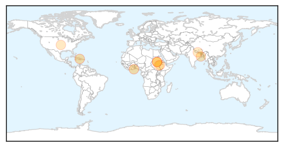
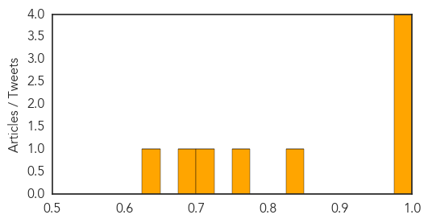
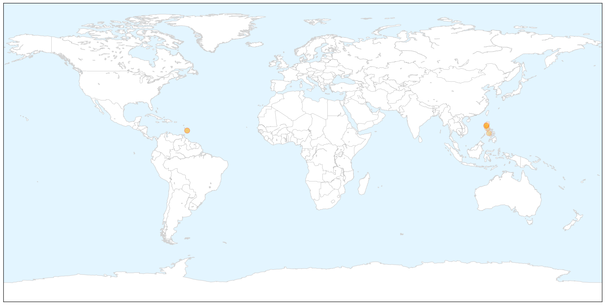

Cholera
30-Day Web Trend
0 alerts, 0 warnings

30-Day Twitter Trend
1 alerts, 0 warnings

Article Locations
Article Confidences
Top Articles:
- 0.992
- South Sudan Red Cross mobilizes volunteers to combat cholera in Juba - South Sudan
- 0.991
- Cholera Vaccine Protects Whole Community, Even Unvaccinated « Israel Grossman Article.Org
- 0.989
- Cholera Cases Overwhelm Achimota Hospital
- 0.983
- South Sudan: South Sudan Red Cross mobilizes volunteers to combat cholera in Juba
- 0.832
- Oral cholera vaccine moderately effective in reducing the burden of severely dehydrating diarrhea
- 0.761
- Over 150,000 South Sudanese now sheltering in UN bases
- 0.703
- Attention People Who Eat Dog Meat! Here are 3 Major Health Concerns You Should Know About
- 0.680
- Better Maps, Less Cholera?
- 0.631
- Medics flee war-torn S. Sudan leaving patients to die
Top Tweets:
-
No tweets found for Jul 11, 2015
MERS
30-Day Web Trend
0 alerts, 2 warnings

30-Day Twitter Trend
2 alerts, 0 warnings

Article Locations

X

Article Confidences

Top Articles:
- 0.997
- No Reported MERS Cases In Barbados
- 0.995
- Foreigner from ME now free from MERS-CoV
- 0.991
- No reported cases of MERS in Barbados -- NationNews Barbados -- Local, Regional and International News nationnews.com
- 0.987
- Foreigner with MERS now well, released
- 0.982
- WHO commended PH on handling of MERS-CoV
- 0.979
- Palace: Remain vigilant vs MERS-CoV
- 0.796
- Philippines MERS patient to be discharged from RITM after two negative tests
Top Tweets:
-
No tweets found for Jul 11, 2015